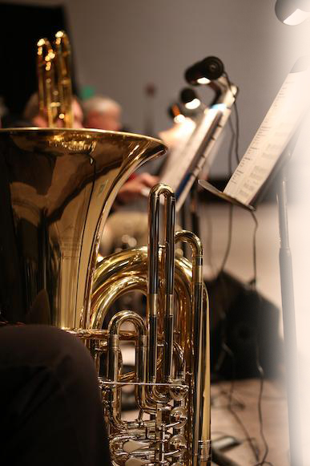

Alat musik tiup kayu yang terbuat dari kuningan dan berbentuk
seperti huruf 'J'.
Diciptakan oleh “Antoine-Joseph Sax “ pada tahun 1840'an.
Memiliki banyak jenis, dan setiap jenis memiliki rentang nada 2
setengah oktaf.

Pada awalnya digunakan untuk orkestra (tetapi tidak menjadi alat
musik dasar/wajib) dan band militer.